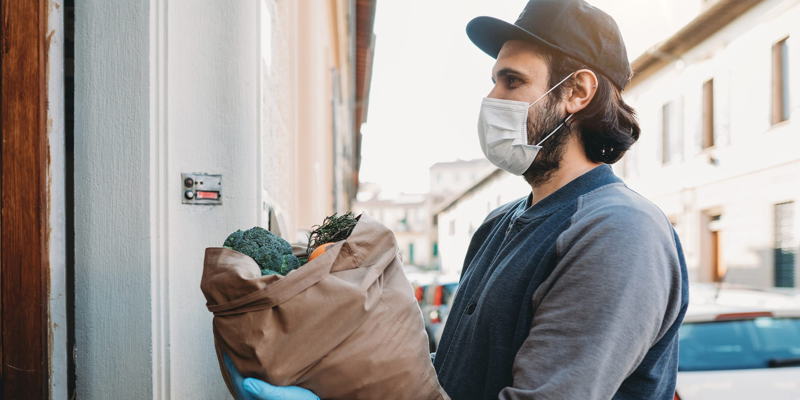

Voluntário COVID-19


A VoluntárioCOVID19 é uma instituição de âmbito nacional que tem como objetivo ajudar voluntários e instituições ou iniciativas de voluntariado a fazerem 'match' e colaborarem no combate à pandemia da COVID-19. A instituição promove ainda o voluntariado em Portugal permitindo a partilha de momentos de voluntariado no seu website como objectivo de poder vir a inspirar novos individuos a experimentar esta experiência tão gratificante.
Nova estirpe de COVID-19 detectada no Porto
Associação 'Não ao covid' procura ajuda

Trabalho de equipa ajuda população de aljubarrota